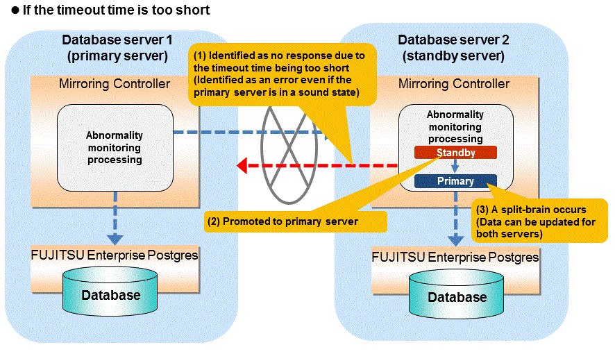
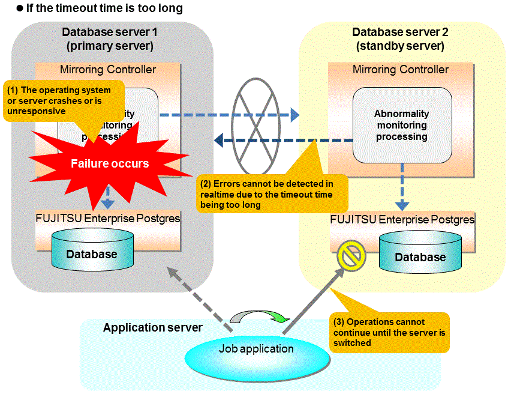

The type of issue below occurs if automatic degradation is performed unconditionally after an issue is detected during heartbeat monitoring of an operating system or server, and heartbeat monitoring was not properly tuned.


Notes on monitoring when the operating system or server crashes or is unresponsive
As illustrated in the diagram above, timeout is used to monitor whether the operating system or server crashes or is unresponsive. Therefore, if tuning has not been performed correctly, there is a risk of a split-brain mistakenly occurring even if the server is in a sound state.
Split-brain is a phenomenon in which both servers temporarily operate as primary servers, causing data updates to be performed on both servers.
It can be confirmed that split-brain occurs under the following conditions:
When the mc_ctl command is executed in status mode on both servers, the "host_role" of both servers is output as "primary", and
The following message is output to the system log of one of the servers:
promotion processing completed (MCA00062)
Use the procedure described below. Note that the new primary server is the server that was confirmed in step 2 of the aforementioned detection method.
Stop all applications that are running on the old and new primary servers.
Investigate and recover the database.
Investigate the update results that have not been reflected to the new primary server from the database of the old primary server, and apply to the new primary server as necessary.
Stop the old primary server instance and the Mirroring Controller.
Resume the applications that were stopped in step 1.
Recover the old primary server.
While referring to "2.5 Setting Up the Standby Server", build (set up) the old primary server as the new standby server, from the new primary server.